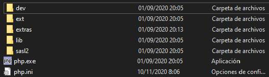
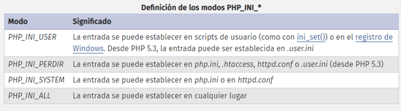

APACHE y PHP
Instalación
Apache y PHP. Descarga, Instalacion y ConfiguracionEn la carpeta de Apache se encuentra htdocs, donde se alojarán nuestros archivos, a los cuales se podrá acceder desde la web a través del protocolo http.
El PHP instalado será de tipo Thread Safe, es decir, compilaciones con capacidad multiproceso. Las Non Thread Safe solo permiten un proceso. También tenderemos una carpeta con el módulo de PHP, al que se apunta desde la configuración de Apache. En está carpeta tendrémos las siguiente estructura:
php.ini es el archivo en el que configura PHP. Algunas directivas de utilidad son:
- error_reporting = E_ALL & ~E_NOTICE & ~E_DEPRECATED (Mostrar todos los errores excepto los Notice y Deprecated)
- display_errors = On (Mostrar errores o no)
- include_path = ".;C:\ServidorLocal\includes" (Seleccionamos rutas a las que se irá a buscar los archivos solicitados con include o require)
- extension_dir = "C:\ServidorLocal\php7\ext\" (Ruta a donde se buscarán los módulos a añadir en PHP, tales como el módulo de FTP)
- date.timezone = "Europe/Madrid" (Ajustamos la zona horaria)
Podemos cambiar directivas de configuración de forma dinámica a través de código: ini_set() -> Establece el valor de la directiva de configuración dada. La opción de configuración mantendrá este nuevo valor durante la ejecución del script, y se restaurará cuando acabe el mismo.
